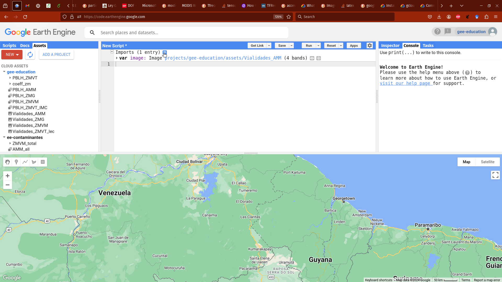

Modelos en GEE
Google Earth Engine (GEE) es una herramienta muy útil, dentro de la cuál se pueden generar modelos matemáticos para las distintas problemáticas que se deseen visualizar dentro de GEE. Sin embargo, el desarrollo no se debe limitar al uso exclusivo de GEE pues esto nos restringiría al uso de otras herramientas desarrolladas por distintos individuos o grupos de trabajo. Bajo esta primicia, en este pequeño tutorial vamos a mostrar como se podemos exportar un modelo creado en otras plataformas y poder exportarlo a GEE.
En este sentido vamos a usar la plataforma GEE para exportar modelos y poder hacer la visualización de los resultados en GEE.
Bases
Un modelo implica en términos muy simples implica poder describir como se comporta algo en lo cual estamos interesados y encontrar las causas que lo explican. Hay muchos tipos de modelos desde los muy complejos hasta los modelos muy simple, pero una forma de ver los es simplemente como funciones,
\[ y = f(x_1, x_2, \dots , x_n ) \]
Donde \(\{ x_i \}\) normalmente los llamamos variables explicativas y a \(y\) la variable descriptiva. Y \(f\) es nuestro modelo, un modelo simple puede ser la combinación lineal de los elementos
\[ f(x_1, x_2, \dots , x_n ) = \alpha_1 x_1 + \alpha_2 x_2 + \dots + \alpha_n x_n \tag{1}\]
o complejo
\[ f(x_1, x_2, \dots , x_n ) = \alpha_{1,1} x_1 + \alpha_{1,2} x_1^2 + \dots + \alpha_{1 ,{\psi(x_1)}} x_1^{\psi(x_1)} + \dots + \alpha_{n ,{\psi(x_n)}} x_n ^{\psi(x_n)} \tag{2}\]
donde \(\psi(x_n)\) es una función que determina hasta que potencia se eleva a la variable \(x_i\).
En estos casos determinar un modelo implicaría encontrar la variables (\(\{ x_i \}\)) que se consideran que mejor explican a la variable \(y\) y encontrar \(\psi(x_i)\). Haciendo uso de los datos propios de cada problemática ajustar el modelo implica poder encontrar las \(\{\alpha_{i,j}\}\).
GEE tiene herramientas para poder hacer modelos sin embargo, los modelos dentro de GEE puede que no se ajusten a las problemáticas que se desean analizar, o no se tienen las herramientas disponibles para generar modelos complejos dentro de GEE. Por tal motivo, podemos obtener un modelo fuera de GEE y si se tiene una expresión como las descritas anteriormente es posible generar las predicciones dentro de GEE para su visualización.
En este ejemplo vamos a obtener el contaminante particle matter de menos de \(2.5 \mu\) (PM 2.5) para la zona metropolitana del valle de México. Para tal motivo vamos a utilizar los datos que se encuentran dentro de GEE, en este caso vamos a utilizar la colección de imágenes ‘MODIS/006/MCD19A2_GRANULES’ la cual contiene el resultado de algoritmo Multi-Angle Implementation of Atmospheric Correction (MAIAC), la banda que vamos a utilizar es la Aerosol Optical Depth at 047 micron esta banda es el espesor óptico de \(0.47\mu m\) . Dicha banda ha sido utilizada para obtener los contaminantes \(PM_{10}\) y \(PM_{2.5}\) los cuales con lleva altos riesgos de la salud al tener una exposición prolongada.
Colección de Imágenes
Para hacer uso de la colección de imágenes se hace usando la siguiente linea
var AOD_MODIS_fix = ee.ImageCollection("MODIS/006/MCD19A2_GRANULES");La colección de imágenes contiene las imágenes disponibles del conjunto de datos, lo que normalmente son muchas imágenes disponibles, dentro de las cuales la mayoría no vamos a utilizar, para esto los objetos ‘ee.ImageCollection’ tienen métodos que nos ayudan a poder filtrar las imágenes dentro de la colección de imágenes.
La siguiente linea de código nos filtra la colección sólo con las imágenes que se tomaron del ‘2005-01-01’ al ‘2016-01-01’.
var AOD_MODIS_fix = ee.ImageCollection("MODIS/006/MCD19A2_GRANULES").filterDate('2005-01-01', '2016-01-01') La siguiente linea filtra las imágenes que contienen al punto cercano a CentroGeo (-99.221411, 19.29183)
var AOD_MODIS_fix = ee.ImageCollection("MODIS/006/MCD19A2_GRANULES").filterBounds(ee.Geometry.Point(-99.221411, 19.29183))Estas las podemos combinar para aplicar las distintas acciones de forma concatenada, es decir, podemos filtrar primero por fecha y después al resultado filtrar las imágenes que intersectan al punto dentro de la misma ejecución, como se muestra a continuación
var AOD_MODIS_fix = ee.ImageCollection("MODIS/006/MCD19A2_GRANULES")
.filterDate('2005-01-01', '2016-01-01')
.filterBounds(ee.Geometry.Point(-99.221411, 19.29183));Este tipo de acciones las podemos implementar no sólo con filtrados sino con distintas acciones disponibles en GEE.
Subir datos a GEE
En la pestaña ‘Assets’ dentro del editor de código de GEE (panel superior izquierdo) podemos añadir elementos para hacer uso de los mismos como se muestra en la imagen.
 .
.
Los elementos que podemos añadir a GEE son imágenes (.tif, tiff), tablas en archivos shape (.shp, .shx, .dbf, .prj o .zip) o archivos csv (.csv). También podemos agregar colecciones de imágenes o folders que contengan este tipo de archivos. Los elementos que subimos a GEE se almacenan en proyectos en la nube de Google, esto hace que estén accesibles desde GEE cada vez que sea necesario. Al estar dentro de la nube de Google las políticas de acceso a los mismos son las de la Nube de Google y también son accesibles desde las API de Google cloud como CLI.
Para hacer uso de estos elementos dentro del editor de código de GEE se pueden insertar haciendo uso de la interfaz gráfica como se muestra en la imagen @fig:ins_elem. Los elementos añadidos se insertaran al inicio de nuestro código como un preámbulo llamado Imports, se pueden editar los nombres para que los nombres de las variables donde se almacenan sean de acuerdo a las políticas del desarrollador.
Si se desea compartir los elementos que se encuentran en el preámbulo Imports se hace click en el botón azul a lado de Imports esto abrira una ventana la cual contendra todos los elementos que se encuentran dentro de el preámbulo Imports. Los elementos también pueden ser añadidos al código simplemente copiando y pegando. Se puede eliminar los elementos importados usando un botón de basura que se encuentra en el margen izquierdo cuando se pasa a lado del elemento insertado.

Para añadirlo de forma directa al código, se hace a través de insertar el nombre del elemento y declararlo como el objeto que es. En el caso de una imagen se utiliza ee.Image(), para una tabla se hace con ee.FeatureCollection(), para el caso de un objeto geométrico dentro de un archivo .shp se hace como si fuese un tabla con ee.FeatureCollection(), y si es un conjunto de imágenes se declara con ee.ImageCollection(). El código a continuación se muestra como importamos el raster con la agregación de las vialidades extraídas de OpenStreet map (OSM) y subida a GEE en el elemento “raster_agregados_vialidades” el cual se tendrá que añadir dentro de los assets.
var image = ee.Image("raster_agregados_vialidades");Explicación del Modelo
Nuestro modelo, es una modificación al modelo utilizado por Just, haciendo uso de una fuente de información distinta de los datos meteorológicos para hacer las estimaciones, la fuente de datos a utilizar son los datos de reánalisis meteorológicos del “European Centre for Medium-Range Weather Forecasts” los cuales se encuentran disponibles dentro de GEE en el catálogo de datos. Para importar estos datos lo hacemos a traves de el siguiente código y al igual que con la colección de MODIS la filtramos por fecha, seleccionamos las bandas que vamos a utilizar y las partes de las imágenes que se encuentren dentro del “bounding box” del polígono de la zona metropolitana el cual se encuentra en la variable ZMVM_bb.
var land_eras_day_f = ee.ImageCollection("ECMWF/ERA5_LAND/HOURLY").filter(
ee.Filter.date(startdate, enddate)
).select([
'dewpoint_temperature_2m',
'total_evaporation',
'temperature_2m',
'total_precipitation_hourly',
'total_precipitation'
]).filterBounds(ZMVM_bb);Para obtener el bounding box del polígono de la Zona Metropolitana del Valle de México (ZMVM) se hace de la siguiente forma:
var ZMVM_tabla = ee.FeatureCollection("Poligono_archivo_shape_ZMVM");
var ZMVM_bb = ZMVM_tabla.geometry().bounds();donde “Poligono_archivo_shape_ZMVM” es un elemento que se deberá añadir en los assets que contenga al polígono de la ZMVM. El polígono se encuentra dentro de un archivo .shp, para poder hacer uso de este elemento geométrico se hace usando .geometry() el cual extrae lo que se encuentra dentro del campo geometry de una tabla, en nuestro caso el polígono de la ZMVM. Después tomamos el cuadrado delimitador o “bounding box” usando .bounds() el cual es un método de los objetos geométricos en GEE.
De este conjunto de datos seleccionamos los que se encuentran en determinadas fechas y filtramos los elementos las imágenes que se intersecten con ZMVM_bb.
Todos igual
Por simpleza vamos a remuestrar todos los datos para que estos esten similar a los datos de MODIS.
Para tal proposito definimos una función,
var modisProj = AOD_MODIS.first().projection();
var resample_coll = function(image){
return image.reproject(modisProj);
};Entrenamiento fuera de GEE.
El modelo fue entrenado con los datos de forma anual y para cada día se obtuvieron los valores de los coeficientes para el modelo, de forma similar a la presentada en Equation 2.
\[ PM^{2.5}_{ij} = \alpha + \beta AOD_{ij}+ \beta_2 \text{temperature}_{ij} + \beta_3 \text{relative humidity}_{ij} + \] \[ \beta_4 PBLH_{ij} + \beta_5 \sqrt{\text{precipitation}_{ij}} + \beta_6 \text{Street density}_{i} + \varepsilon \tag{3}\]
donde \(\beta_2, \beta_3, \beta_4, \beta_5, \beta_6\) son coeficientes que se determinan en el modelo todo el año. Mientras que \(\beta\) y \(\alpha\) se determinan de forma diaria.
Coeficientes
Por simplicidad, los coeficientes se ponen dentro de una tabla, la cual es añadida a través de los Assets. La cual tiene la siguiente forma:
| Intercept | Optical_Depth_047_z | temperature_2m_z | relative_humidity_z | total_precipitation_sqrt_z | PBLH_z | vialidades_z | date |
|---|---|---|---|---|---|---|---|
| 3.9526 | 0.4266 | 0.2033 | -0.3986 | -0.1151 | 0.0128 | 2004-01-01 | 1072915200 |
| 1.1116 | 0.2307 | 0.2033 | -0.3986 | -0.1151 | 0.0128 | 2004-01-02 | 1073001600 |
sólo mostramos los primeros elementos pero la tabla deberá contener todos los días en donde es posible obtener el modelo.
Esta tabla se sube usando la pestaña Assets, se resalta en particular la columna ‘system:index’, esta es la fecha en ‘Unix time’, es importante pues dentro de GEE nos sirve para poder usar el filtro de fechas (.filterDate) si el dato no se encuentra en este formato los filtros específicos de fechas no se pueden utilizar.
Las variables a usar dentro de nuestro modelo en Equation 3 son \(AOD_{ij}\) es el espesor óptico de MODIS para el día \(j\) en la celda \(i\), \(\text{precipitation}_{ij}\) es la precipitación y \(\text{temperature}_{ij}\) la temperatura a \(2\) metros para el día \(j\) en la celda \(i\) las cuales se obtienen de la colección de reánalisis meteorológicos. \(PBLH_{ij}\) es la altura de la capa límite de mezcla. Y \(\text{Street density}_{i}\) la densidad de calles en la celda \(i\).
Todas la variables anteriores las podemos extraer directamente de las colecciones de imágenes que se encuentran en los datos de GEE o bien colecciones que añadimos nosotros como es el caso de \(PBLH\), pues esta no se encuentra directamente en GEE, es necesario descargar y añadir como colección de imágenes a GEE.
var PBLH_ZMVT = ee.ImageCollection("PBLH_data")Calcular para toda la colección
Nos falta la variable \(\text{relative humidity}_{ij}\) la cual es la humedad relativa en el día \(j\) en la celda \(i\), pero esta puede ser obtenida usando la temperatura y el punto de rocío.
\[ \frac{\exp{(\frac{17.625*TD}{243.04+TD})}}{\exp(\frac{17.625*Temp}{243.04+Temp})} \cdot 100 \]
Donde \(Temp\) es la temperatura y \(TD\) es el punto de rocío. Podemos obtener un raster de la humedad relativa aplicando usando las bandas que seleccionamos de la colección de imágenes de los datos de reanálisis con la siguiente función:
var relat_humed = function(image){
/*
actual_water_press = 611.21 * math.exp((17.502 * td) / (240.97 + td))
max_water_press = 611.21 * math.exp((17.502 * t) / (240.97 + t))
HR=(actual_water_press/ max_water_press)*100
*/
var lambda_i = 243.04;
var beta_i = 17.625; ///17.1; //17.625;
var dew_point = image.select('dewpoint_temperature_2m');
var temp_2m = image.select('temperature_2m');
var prec_total = image.select('total_precipitation');
var e_up = dew_point
.multiply(beta_i);
var e_dow = dew_point
.add(lambda_i);
var e = ((e_up.divide(e_dow)).exp());
var e_s_up = temp_2m
.multiply(beta_i);
var e_s_dow = temp_2m
.add(lambda_i);
var e_s = ((e_s_up.divide(e_s_dow)).exp());
var rel_hum = (e.divide(e_s)).multiply(100);
rel_hum = rel_hum .select(['dewpoint_temperature_2m']).rename(['relative_humidity']);
rel_hum = rel_hum
.addBands(temp_2m)
.addBands(dew_point)
.addBands(prec_total)
.set({'system:time_start':image.get('system:time_start')})
;
return rel_hum;
};- Definimos una función para calcular la humedad relativa basada en el punto de rocío y la temperatura.
- La función calcula la presión de vapor y la saturación de vapor usando las formulas respectivas.
- Finalmente se calcula la humedad relativa y se añade una nueva banda (
relative_humidity) a la imagen.
Para aplicar la función a las imágenes diarias se “mapea” la función a todas los elementos de la colección.
land_eras_day_f = land_eras_day_f.map(relat_humed );Escalas
Una problemática que nos podemos encontrar es que en algunas ocasiones al ajustar el modelo en R puede ser necesario escalar las variables usando z-scores para que el modelo converja. Si es necesario hacer esto entonces es necesario saber como se escalaron las variables y poder subir estos valores dentro de GEE usando una tabla. Si se escala con la función scale en R entonces nos interesan los valores “scale” y “center” donde “scale” es la desviación estándar y “center” es el promedio de los datos.
\[ v_{escalada} = \frac{v- \mu(v)}{\sigma(v)} \]
\(\mu(v)\) es el promedio de los valores de la variable \(v\), \(\sigma(v)\) es la desviación estándar de los valores de la variable \(v\) y \(v_{escalada}\) es la variable escalada.
Si fue necesario escalar las variables para obtener la convergencia del modelo entonces podemos escalar los valores dentro de GEE si tenemos \(\mu(v)\) y \(\sigma(v)\). Por simpleza subimos una tabla la cual contiene dichos valores de forma anual.
| Variable | center | scale | year |
|---|---|---|---|
| PM25_z | 29.48 | 10.95 | 2004 |
| Optical_Depth_047_z | 249.99 | 149.17 | 2004 |
| temperature_2m_z | 292.50 | 5.26 | 2004 |
| relative_humidity_z | 90.55 | 3.76 | 2004 |
| total_precipitation_sqrt_z | 0.02 | 0.01 | 2004 |
| PBLH_z | 450.12 | 176.57 | 2004 |
| vialidades_z | 1421.67 | 1855.65 | 2004 |
| PM25_z | 30.32 | 13.84 | 2005 |
| Optical_Depth_047_z | 266.90 | 151.62 | 2005 |
| temperature_2m_z | 293.15 | 5.34 | 2005 |
| relative_humidity_z | 88.98 | 5.56 | 2005 |
| total_precipitation_sqrt_z | 0.02 | 0.02 | 2005 |
| PBLH_z | 496.19 | 216.17 | 2005 |
| vialidades_z | 1421.67 | 1855.65 | 2005 |
Para seleccionar los valores para poder escalar los datos seleccionamos los datos para un año en especifico de la siguiente forma:
var selected_day = '2018-04-24';
selected_day = ee.Date(selected_day);
var scale_values = ee.FeatureCollection("your_scale_values_table");
var all_scale_day = scale_values.filter(ee.Filter.eq('year', selected_day.get('year')));
var optical_scale_dic = ee.Dictionary({
'center': all_scale_day.filter(ee.Filter.eq('1', 'Optical_Depth_047_z')).first().get('center'),
'scale':all_scale_day.filter(ee.Filter.eq('1', 'Optical_Depth_047_z')).first().get('scale')
});
var PBLH_scale_dic = ee.Dictionary({
'center': all_scale_day.filter(ee.Filter.eq('1', 'PBLH_z')).first().get('center'),
'scale':all_scale_day.filter(ee.Filter.eq('1', 'PBLH_z')).first().get('scale')
});
var PM25_scale_dic = ee.Dictionary({
'center': all_scale_day.filter(ee.Filter.eq('1', 'PM10_z')).first().get('center'),
'scale':all_scale_day.filter(ee.Filter.eq('1', 'PM10_z')).first().get('scale')
});
var precipitation_scale_dic = ee.Dictionary({
'center': all_scale_day.filter(ee.Filter.eq('1', 'total_precipitation_sqrt_z')).first().get('center'),
'scale':all_scale_day.filter(ee.Filter.eq('1', 'total_precipitation_sqrt_z')).first().get('scale')
});
var RH_scale_dic = ee.Dictionary({
'center': all_scale_day.filter(ee.Filter.eq('1', 'relative_humidity_z')).first().get('center'),
'scale':all_scale_day.filter(ee.Filter.eq('1', 'relative_humidity_z')).first().get('scale')
});
var Temp_scale_dic = ee.Dictionary({
'center': all_scale_day.filter(ee.Filter.eq('1', 'temperature_2m_z')).first().get('center'),
'scale':all_scale_day.filter(ee.Filter.eq('1', 'temperature_2m_z')).first().get('scale')
});
var vialidades_scale_dic = ee.Dictionary({
'center': all_scale_day.filter(ee.Filter.eq('1', 'vialidades_z')).first().get('center'),
'scale':all_scale_day.filter(ee.Filter.eq('1', 'vialidades_z')).first().get('scale')
});Para cada una de las variables tenemos un diccionario con valores center y scale para poder escalar los datos en GEE. Se hace una función especifica para las variable obtenidos de reanálisis y para los demás se hace de forma individual.
var z_scale_land = function(image){
var temp_2m = image.select('temperature_2m');
temp_2m= temp_2m.expression(
'(x - mean_x) / sd_x', {
'x':temp_2m ,
'mean_x': Temp_scale_dic.getNumber('center'),
'sd_x': Temp_scale_dic.getNumber('scale')
}
).rename('temperature_2m_z');
var rh = image.select('relative_humidity');
rh= rh.expression(
'(x - mean_x) / sd_x', {
'x':rh ,
'mean_x': RH_scale_dic.getNumber('center'),
'sd_x': RH_scale_dic.getNumber('scale')
}
).rename('relative_humidity_z') ;
var total_prec = image.select('total_precipitation');
total_prec= total_prec.expression(
'(x - mean_x) / sd_x', {
'x':total_prec ,
'mean_x': precipitation_scale_dic.getNumber('center'),
'sd_x': precipitation_scale_dic.getNumber('scale')
}
).rename('total_precipitation_sqrt_z') ;
return temp_2m
.addBands(rh)
.addBands(total_prec)
.set({'system:time_start':image.get('system:time_start')});
};
var optical_scale = optical_original.expression(
'(x - mean_x) / sd_x', {
'x': optical_original,
'mean_x': optical_scale_dic.getNumber('center'),
'sd_x': optical_scale_dic.getNumber('scale')
}
).rename('Optical_Depth_047_z');Cabe destacar el uso de ee.Image.expression() este método nos permite evaluar los valores en las imágenes como si fuesen fórmulas usando un string.
Una vez escalados los valores se renombran las bandas de las imágenes, con la intención de tener un nombre que identifique que estas bandas se encuentran escaladas.
Unir todo
Ahora vamos a hace uso de las bandas escaladas para poder obtener el resultado de \(PM_{2.5}\) tomando la combinación lineal de nuestro modelo. Aunque se puede hacer las operaciones de forma compacta en código, hacemos éstas en lineas separadas de código para que al leerlo quede de forma legible y entender los distintos pasos realizados.
- Multiplicamos cada banda por el respectivo coeficiente.
- Generamos una imagen que tenga el valor constante
XIntercept - Hacemos la suma de las distintas imágenes en una sola y la renombramos.
- Se re escalan los valores de \(PM_{2.5}\).
///Multiplicar bandas coeficientes
PBLH_day_s = PBLH_day_s.multiply(coeff_day.getNumber('PBLH_z'));
optical_scale = optical_scale.multiply(coeff_day.getNumber('Optical_Depth_047_z'));
var hum_image = day_land_eras_image_s.select('relative_humidity_z').multiply(coeff_day.getNumber('relative_humidity_z'));
var tem_image = day_land_eras_image_s.select('temperature_2m_z').multiply(coeff_day.getNumber('temperature_2m_z'));
var prec_image = day_land_eras_image_s.select('total_precipitation_sqrt_z').multiply(coeff_day.getNumber('total_precipitation_sqrt_z'));
vialidades_s = vialidades_s.multiply(coeff_day.getNumber('vialidades_z'));
var image_interc = ee.Image(coeff_day.getNumber('XIntercept')).clip(ZMVM_bb);
//// Suma
var day_pm= ee.Image().expression(
'opt + pblh + viali + rh + temp + prec_sqr + Intercept',
{
'opt' :optical_scale,
'pblh' :PBLH_day_s,
'viali' :vialidades_s,
'Intercept': image_interc,
'rh': hum_image,
'temp':tem_image,
'prec_sqr':prec_image
}
).rename('PM_scale');
/// Rescalar a valores
var day_pm_re = ee.Image().expression(
'y*sd_x + mean_x',
{
'y': day_pm,
'mean_x': PM25_scale_dic.getNumber('center'),
'sd_x': PM25_scale_dic.getNumber('scale')
}
);En la última imagen se encuentran los valores calculados de \(PM_{2.5}\) y esta es la imagen que vamos a desplegar en un mapa.
Despliegue en mapa
Usamos la imagen y la añadimos al mapa, como los valores mínimos y máximos van a ser de forma diaria para poder hacer una visualización buscamos los mínimos y máximos para ese día usando el método ee.Image.reduceRegion() la cual nos permite hacer uso de la operación reduce y ee.Reducer.minMax() para obtener el mínimo y el máximo.
Una vez añadida la capa al mapa centramos el mapa al centro de la zona metropolitana.
var amm_roj = ['#ffffb2','#fecc5c','#fd8d3c','#f03b20','#bd0026'];
var min_max = day_pm_re.reduceRegion(ee.Reducer.minMax(),ZMVM_bb)
print(min_max)
var max_pmval = min_max.get('PM_scale_max').getInfo();
var min_pmval = min_max.get('PM_scale_min').getInfo();
Map.addLayer(
day_pm_re,
{
'bands':'PM_scale',
min : min_pmval,
max :max_pmval,
palette: amm_roj
}, 'PM 2.5'
);
Map.centerObject(ZMVM_bb, 10);Al final podemos observar como queda la estimación generada por el modelo.
Comentario final
Este tutorial donde mostramos que podemos hacer uso de distintas herramientas e integrarlas dentro de GEE.